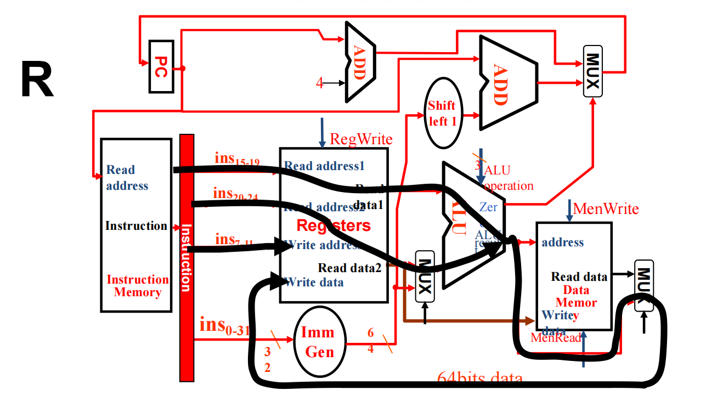

计算机组成4-1:单周期CPU
设计的终极目标与度量衡
我们评价一个处理器好坏的尺子是什么？是性能。经典的CPU性能公式是我们一切设计的出发点和最终归宿：
$$ \text{CPU执行时间} = \frac{\text{指令数}}{\text{程序}} \times \frac{\text{时钟周期数}}{\text{指令}} \times \frac{\text{秒数}}{\text{时钟周期}} $$
- 指令数 (Instruction Count)：编译器和ISA的领域。我们作为硬件设计师，对此影响有限。
- CPI (Cycles Per Instruction)：每条指令平均耗时多少个“滴答”。这是衡量处理器架构效率的核心指标。
- 时钟周期时间 (Clock Cycle Time)：每个“滴答”多长，即时钟频率的倒数。这取决于电路的物理实现，是我们设计的直接产物。
我们的使命，就是在保证功能正确的前提下，疯狂地压榨CPI和时钟周期时间。然而，这两者往往是相互矛盾的。一个简单的设计（比如我们今天要做的单周期处理器），CPI可以做到1，但其时钟周期会被最慢的指令拖累得非常长。一个复杂的设计（比如后续要学的流水线处理器），时钟周期可以很短，但可能会因为各种暂停（Hazard）导致CPI上升。
方法论：化繁为简，循序渐进
面对现代处理器的亿万晶体管，直接上手无异于痴人说梦。因此，我们必须遵循计算机科学最伟大的设计原则之一：化繁为简 (Simplicity favors regularity)。
-
从一个最小但完备的指令子集开始：我们将聚焦于几类最具代表性的RISC-V指令，它们足以揭示处理器设计的全部核心矛盾和解决方案。
- 算术逻辑指令:
add,sub,and,or(R-Type) — 纯粹的计算。 - 内存访问指令:
ld,sd(I-Type, S-Type) — 与内存交互。 - 条件分支指令:
beq(SB-Type) — 改变控制流。 - 无条件跳转指令:
jal(UJ-Type) — 也是改变控制流。 - 这个子集虽然小，但它包含了数据处理、数据传输和控制流改变这三大类基本操作，足以构建任何复杂的程序。
- 算术逻辑指令:
-
增量式构建：我们将像雕塑家一样，先搭建骨架，再填充肌肉，最后赋予神经系统。每一步都只解决一个问题，并观察它对现有系统的影响。
在动手之前，我们必须牢记任何指令在处理器中的生命周期五部分，这是我们构建的蓝图：
- 取指 (Fetch)
- 译码 (Decode)
- 执行 (Execute)
- 访存 (Memory)
- 写回 (Write-back)
第一部分：设计的基础：语言、元件与法则
1.1 设计语言：二进制约定
我们的世界建立在二进制之上。硬件层面，这意味着：
- 信息编码：逻辑
1和0由电路的高、低电压表示。 - 数据通路：一条导线承载1 bit信息。一个64位的整数，就需要64根平行的导线（即总线）来传输。总线的宽度是数据通路设计中的一个基本参数。
1.2 两类核心元件：无记忆的“计算者”与有记忆的“存储者”
我们的处理器由两种基本元件构成：
-
组合逻辑元件 (Combinational Logic)
- 哲学定义：它们是“活在当下”的元件，没有记忆。其输出在任何时刻都严格地由当前输入决定。电路延迟是它们唯一的物理属性。
- 角色：数据处理、转换和决策的核心。
- 核心成员：
- 算术逻辑单元 (ALU)：处理器的“瑞士军刀”。输入两个64位操作数，根据一个几位的控制信号，输出一个64位的结果（以及一些状态标志，如
Zero信号）。它是执行阶段的核心。 - 加法器 (Adder)：ALU的特例，只做加法。在我们的设计中，它将用于计算
PC+4和分支目标地址。 - 多路选择器 (Multiplexer, MUX)：这是数据通路设计的灵魂。它像一个铁路道岔，根据一个控制信号，从多个输入“轨道”中选择一个连接到唯一的输出“轨道”。每当你的数据通路中一个点的信号来源不唯一时，你就需要一个MUX。

- 算术逻辑单元 (ALU)：处理器的“瑞士军刀”。输入两个64位操作数，根据一个几位的控制信号，输出一个64位的结果（以及一些状态标志，如
-
时序逻辑元件 (Sequential Logic)
- 哲学定义：它们是拥有“记忆”和“历史”的元件。它们的输出不仅依赖于当前输入，更依赖于内部存储的状态。它们是系统状态的载体。
- 角色：存储指令执行过程中的中间结果、程序状态和最终数据。
- 核心成员：
- 寄存器 (Register)：最基本的存储单元。它有一个数据输入D，一个数据输出Q，以及一个时钟输入Clk。关键特性：只有在时钟的上升沿到来时，Q的值才会更新为D的值。在其他时间，无论D如何变化，Q都保持不变。
- 带写使能的寄存器：在实际应用中，我们并非每个时钟周期都想更新寄存器。因此，我们增加一个
Write Enable控制信号。只有在时钟上升沿且Write Enable为高电平时，寄存器才会被更新。寄存器堆和PC的设计都基于此。 - 存储器 (Memory)：可以看作一个巨大的寄存器数组。它有一个地址输入，一个数据输入（用于写），一个数据输出（用于读），以及读/写控制信号。
1.3 核心法则：时钟同步方法论 (Clocking Methodology)
为什么需要时钟？ 如果没有一个统一的节拍，数据在电路中传播的速度不一（快的信号可能已经到达下一站，慢的信号还在路上），会导致时序混乱，我们无法在确定的时刻获得一个稳定、正确的计算结果。时钟就像一个乐队指挥，确保所有乐手（逻辑元件）在同一节拍上行动。
我们的工作模式：
- 在一个时钟周期的开始（上升沿），数据从一个状态元件（如PC，寄存器堆）中被读出。
- 这些数据流经一系列组合逻辑（如ALU，MUX），进行计算和选择。这是一个纯粹的物理传播过程，需要时间。
- 在下一个时钟周期的上升沿到来之前，组合逻辑的输出必须稳定下来，并准备好被写入下一个状态元件。
- 在下一个上升沿，新的计算结果被锁存到目标状态元件中。
这个模型引出了处理器设计的第一个核心约束： $$ T_{\text{clk}} \ge T_{\text{state_read}} + T_{\text{combinational_logic_max_delay}} + T_{\text{setup}} $$ 其中，$T_{\text{clk}}$是时钟周期时间。$T_{\text{combinational_logic_max_delay}}$ 是数据流经的最长组合逻辑路径的延迟，即关键路径延迟。$T_{\text{setup}}$ 是数据在时钟沿到来前必须保持稳定的建立时间。
设计启示：你的数据通路设计得越复杂、串联的逻辑门越多，关键路径就越长，时钟频率就越低，处理器性能就越差。这是我们后续进行性能优化的关键所在。
第二部分：数据通路：一步一脚印的构建之旅
我们将以指令的生命周期为线索，逐步搭建数据通路。请大家时刻对照RISC-V指令格式图 ，因为指令的每一个字段都是我们连接电路的“接线图”。
2.1 第一步：取指令 (Instruction Fetch) - 起点
- 任务需求：根据PC寄存器的地址，到指令存储器中取指令，并计算出下一条指令的地址
PC+4。 - 所需元件：PC寄存器、指令存储器、一个加法器。
- 数据流设计：
- PC是一个64位的寄存器，它的输出端连接到指令存储器的“地址”输入端口。
- 指令存储器是一个组合逻辑（或至少可以模型化为组合逻辑），它根据输入的地址，立即输出存储在该地址的32位指令。
- PC的输出同时被送到一个加法器的输入A。
- 加法器的输入B固定为常数
4（因为RISC-V指令定长4字节）。 - 加法器的输出，连接回PC寄存器的“数据”输入端。
- 这样，在每个时钟上升沿，PC都会被更新为
旧PC + 4，从而自动地、顺序地完成取指。这是一个优雅的自驱动循环。
2.2 第二步：支持R-Type指令 (如 add x9, x20, x21) - 纯粹的计算
- 任务需求：从指令中解析出
rs1(x20),rs2(x21)和rd(x9)。从寄存器堆中读出x20和x21的值，送入ALU做加法，结果再写回寄存器堆的x9号寄存器。 - 所需元件：寄存器堆、ALU。
- 数据流设计：
- 寄存器堆接口：它需要5个输入（读地址1，读地址2，写地址，写数据，写使能
RegWrite）和2个输出（读数据1，读数据2）。 - 取出的32位指令中，
bits[19:15](rs1) 连接到寄存器堆的“读地址1”。 bits[24:20](rs2) 连接到“读地址2”。- 寄存器堆的“读数据1”和“读数据2”输出端口，直接连接到ALU的两个64位数据输入端。
- ALU的输出，连接到寄存器堆的“写数据”输入端口。
- 指令的
bits[11:7](rd) 连接到“写地址”。 - 我们需要一个控制信号
RegWrite，对于add指令，它必须为1，以允许写操作发生。
- 寄存器堆接口：它需要5个输入（读地址1，读地址2，写地址，写数据，写使能
至此，我们的数据通路可以顺序取指并执行R-Type计算了。一切看起来很和谐。
2.3 第三步：引入内存访问 (ld/sd) - 第一个设计冲突与MUX的登场
- 任务需求 (
ld x9, 200(x1))：- 读寄存器
x1的值（基地址）。 - 将指令中的12位立即数
200（偏移量）进行符号扩展至64位。 - 用ALU计算
基地址 + 扩展后的偏移量，得到内存地址。 - 访问数据存储器，读出数据。
- 将读出的数据写回寄存器
x9。
- 读寄存器
- 引入新元件：数据存储器、立即数生成单元。
- 设计冲突：
我们来看ALU的第二个输入。对于R-Type指令，它应该接收来自寄存器堆的“读数据2” (rs2的值)。但对于
ld指令，它必须接收来自指令、经过符号扩展后的12位立即数。同一个输入端，有了两个不同的合法来源！ - 工程解决方案：引入MUX (参考下图的R-Type/Load/Store Datapath图中的
ALUSrcMUX)- 我们在ALU的第二个输入端前放置一个2选1的MUX。
- MUX的
0号输入连接寄存器堆的“读数据2”。 - MUX的
1号输入连接立即数生成单元的输出。 - 我们创造一个新的1位控制信号，命名为
ALUSrc。当ALUSrc=0时，选择寄存器数据（用于R-Type）；当ALUSrc=1时，选择立即数（用于ld/sd）。
- 第二个设计冲突：
我们再看写回寄存器堆的数据来源。对于R-Type指令，它来自ALU的计算结果。但对于
ld指令，它来自数据存储器的输出。又是一个二选一！ - 解决方案：再来一个MUX！ (参考下图中的
MemtoRegMUX)- 在寄存器堆的“写数据”端口前放置一个2选1的MUX。
- MUX的
0号输入连接ALU的结果。 - MUX的
1号输入连接数据存储器的“读数据”输出。 - 我们创造一个新的控制信号
MemtoReg。当MemtoReg=0时，选择ALU结果（用于R-Type）；当MemtoReg=1时，选择内存数据（用于ld）。
sd指令的补充：sd指令（存储）与ld类似，都是计算地址。但它不是从内存读数据，而是将rs2的值写入内存。因此，寄存器堆的“读数据2”输出需要连接到数据存储器的“写数据”输入。同时，需要一个MemWrite控制信号来使能内存的写操作。
2.4 第四步：支持条件分支 (beq) - 改变控制流的挑战
- 任务需求 (
beq x1, x2, offset)：- 比较寄存器
x1和x2的值。 - 如果相等，PC要跳转到
当前PC + (符号扩展后的offset << 1)。 - 如果不相等，PC正常更新为
PC + 4。
- 比较寄存器
- 设计哲学：最大化复用
- 如何比较？ 我们不需要专门的比较器。可以让ALU执行
x1 - x2。如果结果为0，则x1 == x2。ALU需要提供一个Zero输出信号，当结果为0时，该信号为高电平。
- 如何比较？ 我们不需要专门的比较器。可以让ALU执行
- 引入新元件：一个用于计算分支目标地址的加法器，一个左移2位的移位器。
- 设计冲突：
下一个PC的值现在有了两个可能的来源：顺序执行时来自
PC+4加法器的输出，分支成功时来自新引入的分支目标地址加法器的输出。这是PC更新路径上的冲突。 - 解决方案：又一个MUX！ (参考下图的
PCSrcMUX)- 在PC的输入端前放置一个2选1的MUX。
- MUX的
0号输入连接PC+4的结果。 - MUX的
1号输入连接分支目标地址计算的结果。 - 这个MUX的选择信号如何产生？它必须同时满足两个条件：(1) 指令是
beq；(2) ALU的Zero信号为1。所以，我们需要一个AND门，其输入是Zero信号和一个新的Branch控制信号（当指令为beq时，该信号为1）。这个AND门的输出，就是MUX的选择信号PCSrc。
至此，我们已经为所有指令类型设计好了各自的“管道”，并用MUX将它们巧妙地连接在了一起。
第三部分：集大成：完整的单周期数据通路与控制单元
现在，是时候将所有碎片拼合，并为它注入灵魂——控制单元。
3.1 完整的单周期数据通路
这张图就是我们前半节课的成果。让我们通过追踪不同指令的数据流，来彻底理解它。
-
追踪
add指令 (R-Type) (参考下图红色高亮路径)- 取指：PC送入指令存储器，指令读出。PC+4计算完成。
- 译码：指令[19:15]和[24:20]送入寄存器堆，读出两个操作数。
- 执行：
ALUSrc=0，MUX选择Read data 2。- 两个操作数进入ALU，ALU控制器根据指令的
funct字段，命令ALU执行加法。
- 访存：此阶段无操作。
MemRead=0,MemWrite=0。 - 写回：
MemtoReg=0，MUX选择ALU的输出。RegWrite=1，结果被写入指令[11:7]指定的rd寄存器。
- PC更新：
Branch=0，所以PCSrc=0，PC被更新为PC+4。 
-
追踪
ld指令 (I-Type) (参考下图紫色高亮路径)- 取指、译码(rs1)：同上。
- 执行：
- 立即数生成单元从指令中提取12位偏移量并符号扩展为64位。
ALUSrc=1，MUX选择这个扩展后的立即数。- ALU控制器（根据主控的
ALUOp）命令ALU执行加法，计算出内存地址。
- 访存：
- ALU计算出的地址送入数据存储器。
MemRead=1,MemWrite=0，数据从内存中读出。
- 写回：
MemtoReg=1，MUX选择从数据存储器读出的数据。RegWrite=1，该数据被写入rd寄存器。
- PC更新：
PCSrc=0，PC更新为PC+4。
-
追踪
beq指令 (SB-Type) (参考下图蓝色高亮路径)- 取指、译码：同上。
- 执行：
ALUSrc=0，MUX选择Read data 2。- ALU控制器命令ALU执行减法。
Zero信号输出比较结果。
- 访存、写回：无操作。
MemRead,MemWrite,RegWrite均为0。 - PC更新：
- 分支目标地址加法器计算出跳转地址。
Branch控制信号为1。它与ALU的Zero信号进行AND运算，结果作为PCSrc。- 如果AND结果为1，
PCSrc=1，MUX选择分支目标地址更新PC。 - 如果AND结果为0，
PCSrc=0，MUX选择PC+4更新PC。
3.2 控制单元：数据通路的大脑
数据通路本身是“哑”的，它需要一个指挥中心。这个中心就是控制单元。
- 本质：一个纯组合逻辑电路。
- 输入：指令的
opcode字段（bits[6:0]）。为什么是opcode？因为opcode是定义指令类型的最主要字段。 - 输出：我们之前设计中用到的所有控制信号：
RegWrite,ALUSrc,MemRead,MemWrite,MemtoReg,Branch，以及一个中间信号ALUOp。
3.2.1 两级控制的设计哲学
我们面临一个设计选择：是让一个巨大的、复杂的控制单元根据opcode, funct3, funct7等所有信息直接产生所有最终控制信号，还是将其分解？
答案是分解。这体现了模块化设计 (Modularity) 的思想。
-
主控制单元：只负责“宏观决策”。它仅根据
opcode来识别指令的大类（R-Type, load, store, branch），并生成除ALU具体操作外的所有控制信号。对于ALU，它只生成一个2位的ALUOp信号，告诉下游“这是一次R-Type运算”或“这是一次用于地址计算的加法”等。 -
ALU控制单元：负责“微观执行”。它的任务非常专一：接收主控传来的
ALUOp和指令中的funct字段，然后翻译成ALU真正需要的4位控制码。
3.2.2 实现控制逻辑
控制单元的实现，本质上就是填写真值表。
-
主控制单元真值表：
-
ALU控制单元真值表：
例如，当主控制器看到opcode是R-Type时，它输出ALUOp=10。ALU控制器看到ALUOp=10，就知道要去检查funct字段。如果funct7+funct3组合表示add，它就输出0010给ALU；如果表示sub，它就输出0110，以此类推。
有了这两张真值表，我们就可以用标准的逻辑电路（如PLA、ROM或一堆逻辑门）来实现这两个控制单元。至此，一个完整的、有大脑、有肌肉的单周期处理器就诞生了！
第四部分：总结与批判性反思
我们从零开始，基于对指令集的深刻理解，通过增量式构建和解决设计冲突，最终完成了一个可以正确执行多种指令的单周期处理器。我们学习了数据通路的设计方法、MUX的核心作用、以及两级控制的模块化思想。
但是，请冷静下来思考一个问题：这个设计好吗？
它很优雅，因为它简单。 每条指令在一个时钟周期内完成，CPI=1，逻辑清晰。
但它性能极差，因为它是一个“木桶”。木桶的容量由最短的木板决定，而我们单周期处理器的时钟周期，则由最长的那条指令的执行时间决定。通常是ld指令，因为它涉及的路径最长：取指 -> 读寄存器 -> ALU计算地址 -> 读内存 -> MUX选择 -> 准备写回寄存器。
这意味着，一条执行路径很短的add指令，也必须浪费大量时间，去等待一个为ld指令量身定做的、漫长的时钟周期。所有指令都被迫与最慢的指令“同步”，这造成了巨大的资源浪费。
我们创造的这个“单周期处理器”，在教学上是完美的，但在现实世界中是低效的。它的简单性，牺牲了性能。
那么，如何打破这个瓶颈？ 如何让快的指令跑得快，同时又不影响慢的指令？如何让处理器的各个部件（取指单元、ALU、数据存储器）不要在大部分时间里都处于空闲等待状态？
这就是我们下一讲要探讨的核心议题——流水线 (Pipelining)。我们将把指令的执行过程切分成多个阶段，让多条指令的不同阶段重叠执行，就像工厂里的流水线一样，从而极大地提高处理器的吞吐率。这将是一场全新的、更复杂的设计挑战。